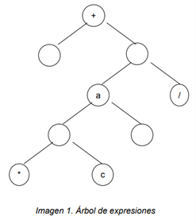
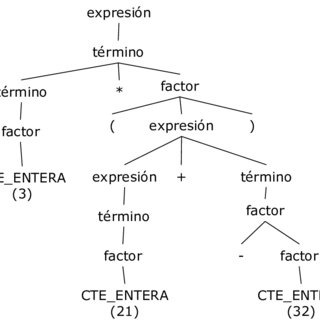

Arboles de expresiones
Los árboles de expresiones representan el código de nivel del lenguaje en forma de datos. Los datos se almacenan en una estructura con forma de árbol. Cada nodo del árbol de expresión representa una expresión, por ejemplo, una llamada al método o una operación binaria, como x < y.Un árbol de expresión sirve para evaluar expresiones del tipo:
(a + b)*c/d
Para que un árbol represente una expresión se deben tomar en cuenta 2 características muy importantes:
• Cualquier hoja está etiquetada sólo con un operando.
• Cualquier nodo interior n está etiquetado por un operador.

Al introducir la expresión debemos de tomar en cuenta las siguientes características:
• La raíz siempre debe ser un operador
• Las hojas siempre deben ser operandos
• Los nodos deben estar etiquetados por operadores
• Si un operador tiene mayor prioridad que la raíz se coloca como hijo.
• Si un operador tiene igual o menor prioridad que un nodo se coloca como padre.
• Un nodo puede contener como hijo otro subárbol que contiene un pequeña expresión.
En los árboles de expresión, la sucesión del preorden de etiquetas nos da lo que se conoce como la forma prefijo de una expresión. Análogamente, la sucesión postorden de las etiquetas de un árbol expresión nos da lo que se conoce como la representación postfijo de una expresión. Finalmente, el inorden de una expresión en un árbol de expresión nos da la expresión infijo en sí misma, pero sin paréntesis.
Construcción de un árbol de expresión
Algoritmo
• Mientras carácter diferente de nulo
• Leer carácter de la lista
• Si es paréntesis pasar al siguiente carácter
• Crear un nodo nuevo que contenga ese carácter
Operando
• Si el árbol está vacío hacer raíz a nuevo, si no recorrer el árbol por la derecha hasta llegar a un nodo con hojas, si la hoja izquierda, no está etiquetada colocar operando, si no colocarlo en la hoja derecha.
Operador
• Si la raíz es un operando, insertar nuevo en ese nodo, y convertir el operando en el hijo izquierdo, si no si hay un paréntesis abierto insertar nuevo en la última hoja derecha y colocar operando como hijo izquierdo.
• Si el carácter anterior es paréntesis izquierdo si el siguiente carácter es •paréntesis derecho si solo hay un operador en el árbol nuevo se convierte en raíz, si no se inserta en el último nodo derecho, y el nodo se convierte en hijo izquierdo.
• Si no se cumple ninguna de las condiciones anteriores si la raíz es de igual prioridad o menor prioridad convertir la raíz en el hijo izq. de nuevo si no la prioridad del nodo raíz es mayor al de nuevo insertar nuevo como hijo derecho y colocar el nodo reemplazado como hijo izquierdo. 